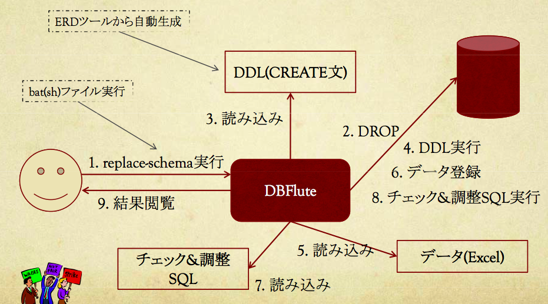

ReplaceSchemaタスク
ReplaceSchemaタスクとは？
DBスキーマの(再)構築を自動化するDBFluteタスクです。
スキーマ初期化・テーブル作成・データ登録 というプロセスを自動化します。
図 : ReplaceSchemaタスクの概念図 
{kind=link}
利用するメリット
- 自動化によるDBの初期構築・DB変更時の再構築の手間の削減
- テストデータの一元管理(DB変更時のデータ修正の手間削減)
- テストデータの品質の維持(データ不備による余計なデバッグコストの削減)
テストデータの管理について
ReplaceSchemaは、プロジェクトでのテストデータの管理方法に密接です。
主な実行タイミング
- 開発用DBスキーマの作成
- DB変更の発生
- テストデータの変更・追加
- 結合テスト用DBスキーマ作成
- 結合テスト用テストデータの変更・追加
- 本番用DBスキーマ作成
- 本番運用後のDB変更(開発用DB)
実行コマンド
DBFluteクライアント配下の replace-schema.(bat|sh) をコマンドから実行します。 実行すると "DBが初期化される" 旨を伝えるメッセージが出ます。"y" で続行します。
環境構築
DBFluteのセットアップが終わった時点から、テーブル作成のためのDDL、データ登録のためのエクセル、最終チェックのためのSQL を準備して所定の場所に配置することで実行可能です。
処理概要
ReplaceSchemaタスクを実行すると処理が始まります。
1. スキーマ初期化
該当スキーマ上のテーブルやビューなどをdropします。
メタ情報を利用してalter文(FK制約など)やdrop文(テーブルやビュー)を実行するため、古い定義が残ったりせず全てがdropされます。 初期構築の場合は特に何も処理されません。
2. テーブル作成
配置されたDDL文を順番に実行します。
3. データ登録
配置されたデータ(エクセルやTSV、CSVなど)を順番に登録します。
4. 最終チェック
データ登録後に配置された(最終チェック用の)SQLを実行します。
主にはデータの整合性チェックをします。
補足
実行ログ
ReplaceSchemaは、タスクの中で最もログを意識する必要のあるタスクと言えます。 エラー発生時などは "コンソールのログ" もしくは "[DBFluteクライアント]/log/dbflute.log" を参考にエラー原因を特定します。
他のO/Rマッパとの組み合わせ
このタスクはO/Rマッパとして機能には依存せず、単独で利用可能です。 (他のO/Rマッパとも組み合わせて利用することが可能です)
SQLServerのWindows認証での注意
SQLServerに対してWindows認証で接続した場合の ReplaceSchema 実行に関して注意点があります。
ReplaceSchemaタスクのログ
ReplaceSchemaタスクの処理自体をトレースするログが出力されます。